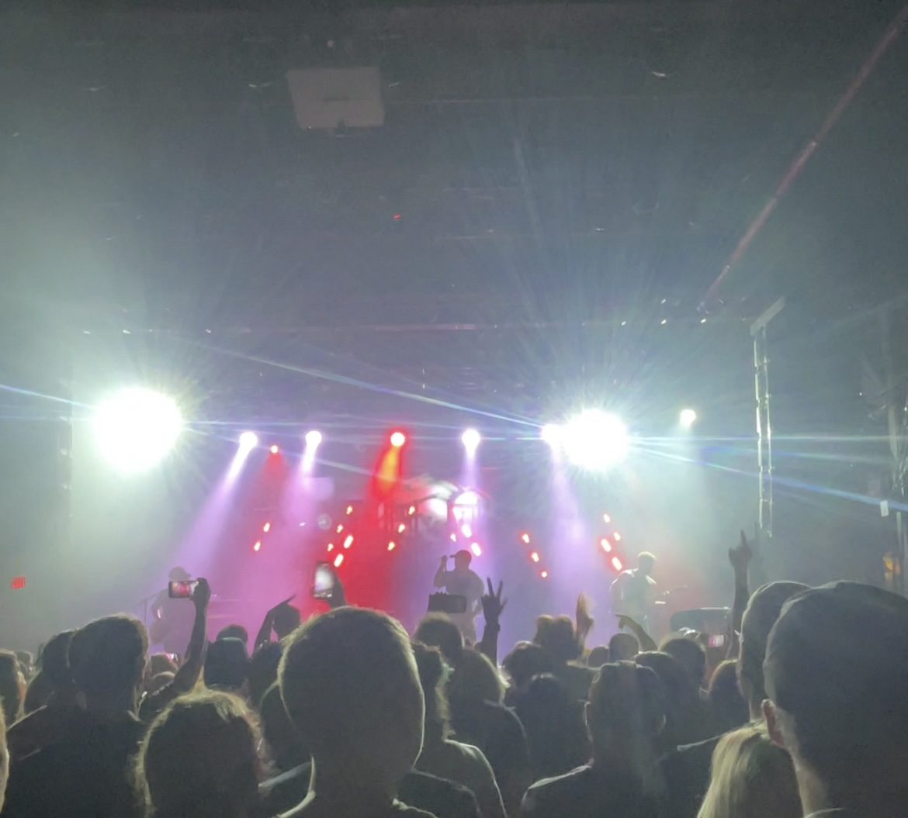
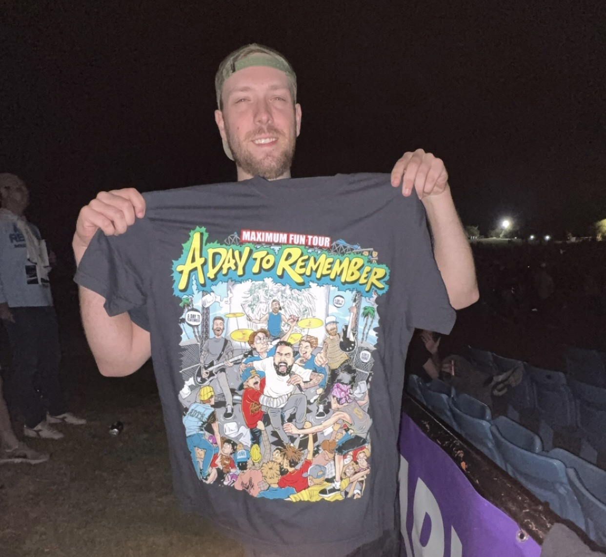
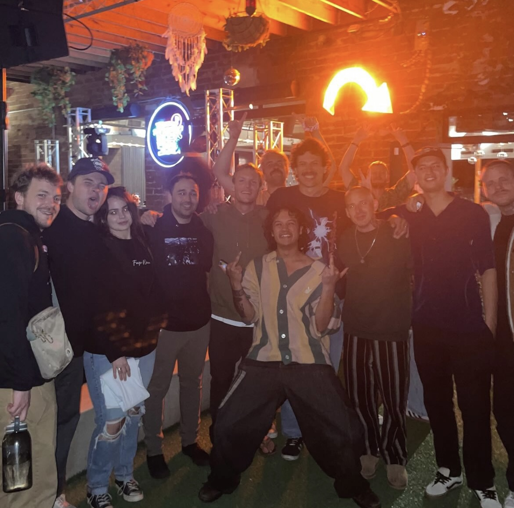
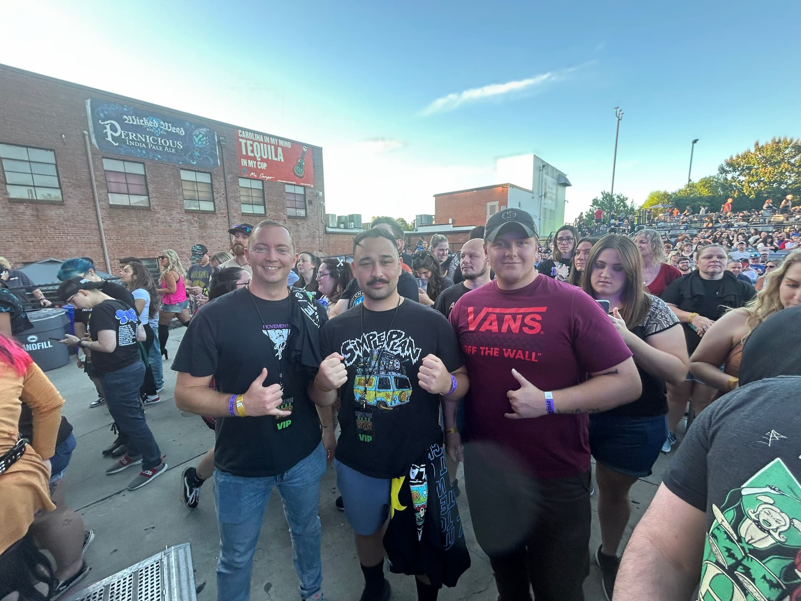
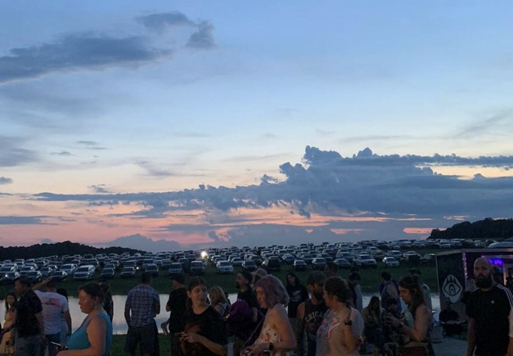
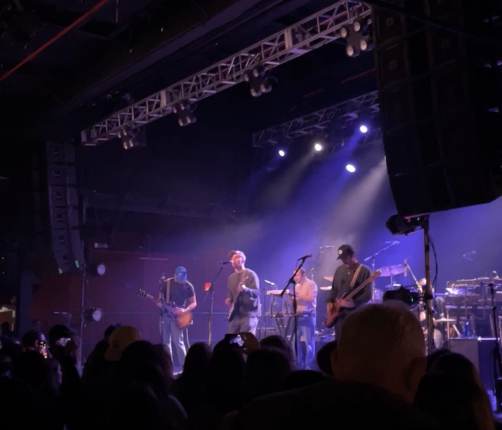
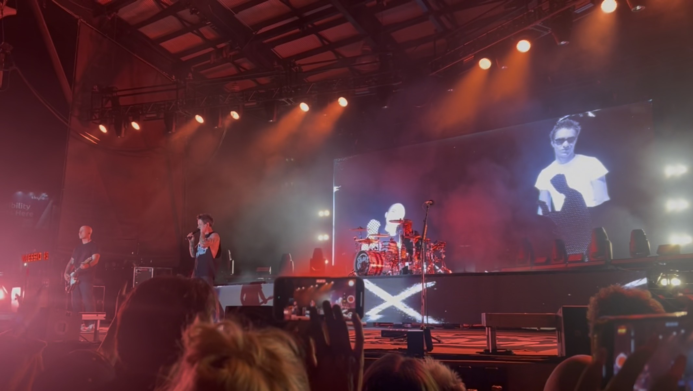
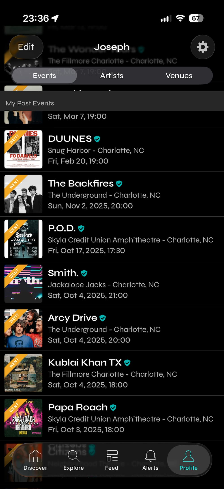
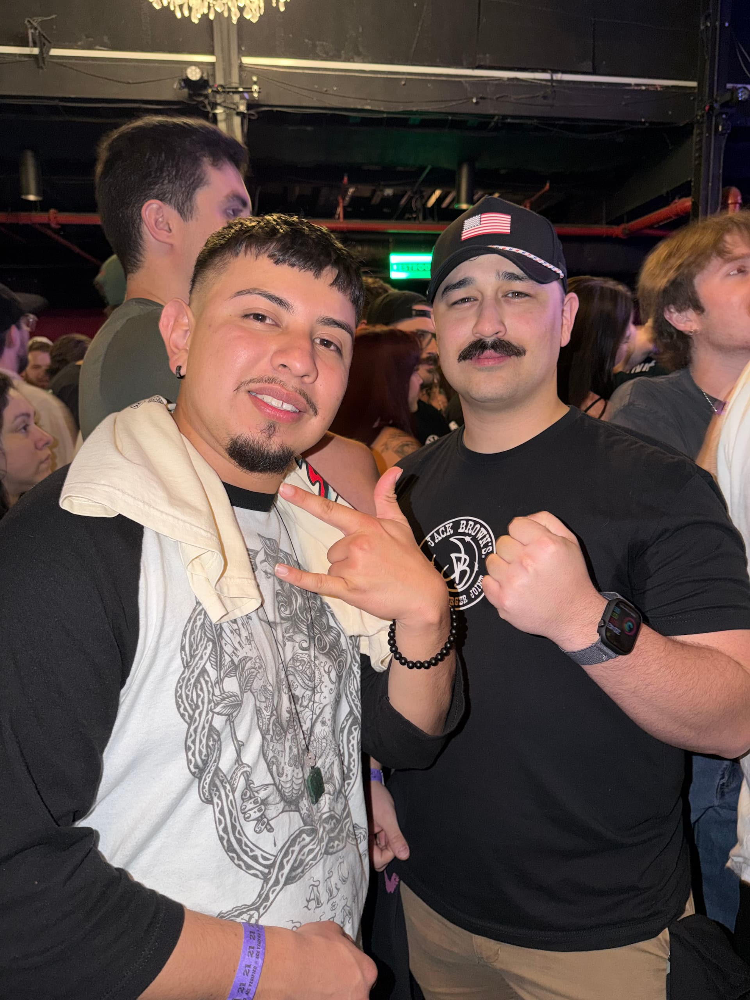
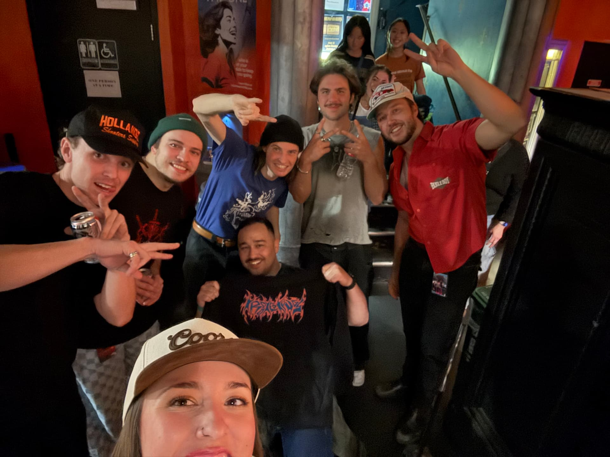

What - The Concert Experience
Going to concerts is one of my favorite hobbies because it's a way for me to get out of my mind every now and then. It brings music to life and allows me to connect with other fans who share the same passion, as well as learning about other bands. When an artist performs live, the energy from the crowd, the stage lights, and the sound of the instruments create a completely different experience compared to listening to music at home.
Every concert is a unique experience. Even if you have heard the same song many times before, hearing hundreds, or even thousands of people sing along can create a powerful moment. I've even had the opportunity to meet some of my favorite bands. It's also an interesting way to network. I have met doctors, lawyers, computer scientists, and many other interesting people at concerts.

This is a photo I took while attending the Citizen concert at The Fillmore.
Who - About Me
My name is Alberto Murrieta but I usually go by my middle name, Joseph, or my nickname that I got in the military, Rocky. When I'm not on my computer, either gaming or coding, I'm usually at a concert. I never went to concerts before joining the military because I was always boxing. Going to concerts has given me so many memories. From meeting new people to taking friends to their first concerts to meeting the bands that are performing. I go to concerts with anyone that wants to go.
My favorite bands are Citizen, Hockey Dad, Turnover, Faze Wave, Krooked Kings, and so many more. I have seen so many concerts and have met a lot of bands. I'm excited to go to more concerts, make more memories, and meet more people.

This is a photo I took of my friend Tristen while attending the ADTR concert at the PNC Pavilion.

Someone took this photo of my friend Baylee and I at the Faze Wave and Evening Elephants concert.

Someone took this photo of us at the Simple Plan concert at the Skyla Credit Union Amphitheatre.
When - When is the Best Time to Go to Concerts?
Honestly, you can go to concerts at any time. Rain or shine. Concerts are happening all year round, so there's always something to look forward to. I hope for weekend concerts because that is when I have more free time. If I'm being honest, I have been to a concert during the week when I know I shouldn't have gone.
Any season can be good for concerts, if I'm being honest. You just need to be prepated for it. Stay hydrated, dress for the weather, and make sure you stretch but most of all, have a great time!

I took this photo at the Hockey Dad and Third Eye Blind concert.
Where - Concert Venues
Most of the concerts I attend take place in venues around the Charlotte area. Charlotte has a strong live music scene with many venues that host both small underground shows and larger touring artists. Depending on the size of the band, the experience can range from an intimate indoor venue to a large outdoor amphitheater filled with thousands of fans.
Some of the venues I have attended concerts at include the PNC Pavilion, The Fillmore, The Underground, The Neighborhood Theatre, and the Skyla Credit Union Amphitheatre. Each venue has its own atmosphere. Smaller venues feel more personal and energetic, while larger venues provide huge stage setups and impressive lighting for major tours.

I took this photo at the Krooked Kings concert at the Fillmore.

I took this photo at the Simple Plan concert at the Skyla Credit Union Amphitheatre.
How - Preparing for a Concert
Attending a concert usually starts with finding out when an artist is coming to a nearby city. I typically check this app called Bandsintown or hear about upcoming shows through social media and music platforms. Once I see that a band I like is coming to Charlotte or another city nearby, I try to buy tickets as early as possible before the bots start buying them and prices increase.
On the day of the concert, I usually arrive early to get a good spot, especially if the show has general admission standing areas. Getting there early also gives me time to check out merchandise stands and watch the opening bands. I try to stay in the middle of the crowd to have the best view of the performance.
- Check tour announcements for bands I enjoy
- Buy tickets online when they become available
- Arrive early to get a good spot in the venue
- Watch opening bands and explore merchandise booths

Personal screenshot of the Bandsintown app.
Why - Why I Love Concerts
I enjoy going to concerts because live music creates an atmosphere that is impossible to recreate anywhere else. The sound of the instruments, the lights from the stage, and the energy of the crowd all come together to create a moment that feels powerful and memorable. Even songs I have listened to many times feel completely different when they are performed live.
Concerts also create memories that stay with you long after the show is over. Singing along with hundreds of people who all know the same lyrics creates a feeling of connection that is hard to describe. For me, concerts are not just about music—they are about the experience, the people you meet, and the stories that come from each show.

Someone took this photo of us at the Knuckle Puck concert.

My friend Stephanie took this photo of us with the Krooked Kings.
AI Prompts That I Used
I used AI tools to help generate ideas for structuring the website, improving the layout, and reviewing my HTML and CSS code. Below are some of the prompts I used during the development of this page.
- "Give me ideas for a hobby website about going to concerts."
- "Help me write a 'What' section for a concert hobby page."
- "How can I make only one section of a webpage visible at a time using JavaScript?"
- "What colors work well for a concert-themed website?"
- "Help me write descriptive alt text for my concert images."
- "Check my HTML and CSS for mistakes."
AI tools were used for brainstorming ideas, improving structure, and debugging code. All final content and design decisions were reviewed and edited by me.